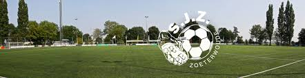

Hallo allemaal, mijn naam is Maxim van Santen. Ik ben 16 jaar en woon al heel mijn leven in Zoeterwoude. Ik woon hier samen met mijn ouders, mijn 2 broers en mijn zusje. Ik zit in vwo 5 op het vlietland en heb de richting NT gekozen, omdat ik later iets wil gaan doen met vliegen. Ik heb verschillende hobby's waaronder voetbal. Ik voetbal bij SJZ in de 17-1 met mijn vrienden samen. Ook vind ik het leuk om samen met vrienden wat de doen of naar de sportschool te gaan in leiden bij Jetts. Ik vind het ook leuk om een rondje te rijden met vrienden of alleen met muziek op. Zelf had ik nooit een website gemaakt, maar door deze opdracht ben ik gaan onderzoeken naar het maken van een website en vond ik het toch interessanter dan ik eerst had gedacht
 footer { background-color: #777; padding: 10px; text-align: center; color: white;